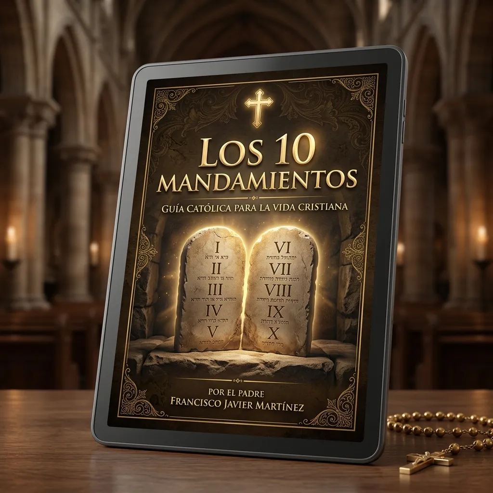
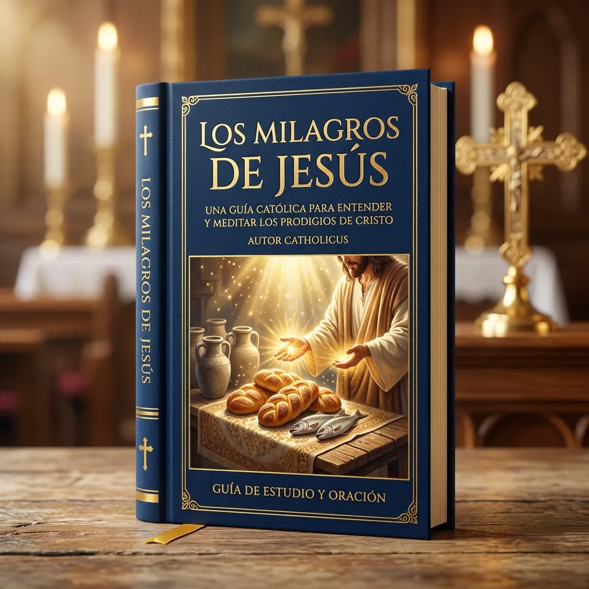

Y no se queda ahí... Llévate estos 5 Bonos Gratis
Cronología Bíblica del Pueblo de Dios
Una línea de tiempo visual y detallada para ubicar históricamente cada libro y acontecimiento clave de la historia de la salvación de forma sencilla.
- ✓ Ubica las épocas: Conoce qué reyes, profetas e imperios dominaban en cada periodo.
- ✓ Conexión Bíblica: Descubre la continuidad perfecta entre el Antiguo y el Nuevo Testamento.
- ✓ Estudio sin pérdida: Una referencia rápida para tener junto a tu Biblia al leer.
Católico Blindado (Defensa de la Fe)
Una guía de consulta rápida para comprender y fundamentar con pasajes bíblicos exactos las principales verdades de nuestra fe católica.
- ✓ Verdades de fe: Fundamentos bíblicos claros sobre la Virgen María, los Santos y la Iglesia.
- ✓ Respuestas Doctrinales: Explicaciones sobre los Sacramentos y la Tradición.
- ✓ Diálogo Seguro: Conversa con argumentos bíblicos sólidos con personas de otras religiones.

Los 10 Mandamientos: Historia y Aplicación Espiritual
Una guía para profundizar en el contexto histórico y la vivencia espiritual de los mandamientos hoy en día.
- ✓ Contexto del Sinaí: Comprende cómo se entregó la Alianza y su valor en la historia.
- ✓ Vida Práctica: Pautas para vivir la ley de amor de Dios en el mundo contemporáneo.
- ✓ Crecimiento Interior: Un excelente recurso para el examen de conciencia y crecimiento personal.

Los Milagros de Jesús
Un recorrido por los principales prodigios y curaciones de Jesús, analizando su significado bíblico y teológico profundo.
- ✓ Signos del Reino: Comprende el mensaje espiritual de cada milagro en los Evangelios.
- ✓ Cultura y Época: Descubre el impacto que causaron estas señales en su contexto histórico.
- ✓ Inspiración y Fe: Meditaciones que te ayudarán a fortalecer tu oración diaria y devoción.
Confianza en el Señor
Salmo 23,1Liturgia del Día (Tu Salmo Diario)
Una herramienta interactiva diaria para extraer un Salmo de aliento, meditación y dirección espiritual que guíe tus pasos cada día de forma sencilla.
- ✓ Dosis Diaria de Paz: Un salmo seleccionado de forma inteligente para renovar tu espíritu cada mañana.
- ✓ Reflexión Espiritual: Mensajes breves y claros que te ayudarán a aplicar la Palabra de Dios.
- ✓ Interactividad: Prueba la herramienta desde hoy y extrae tu Salmo diario con un solo clic.